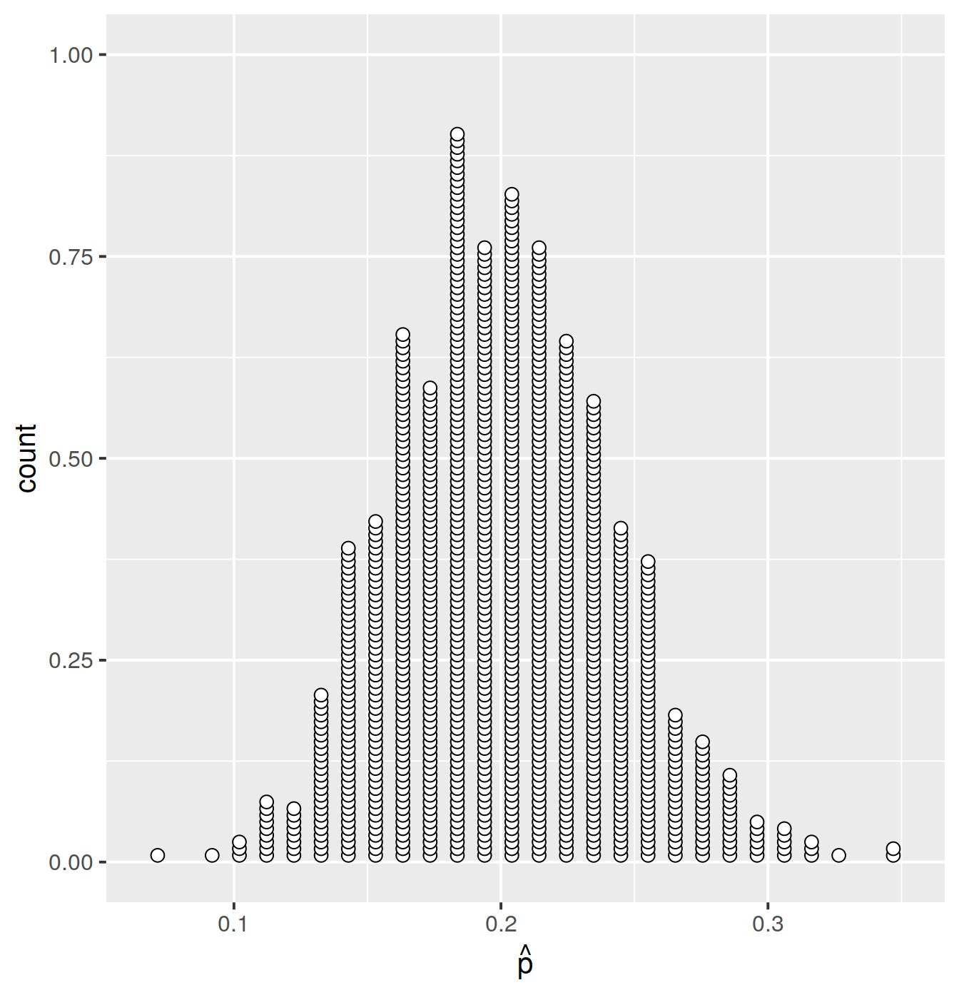
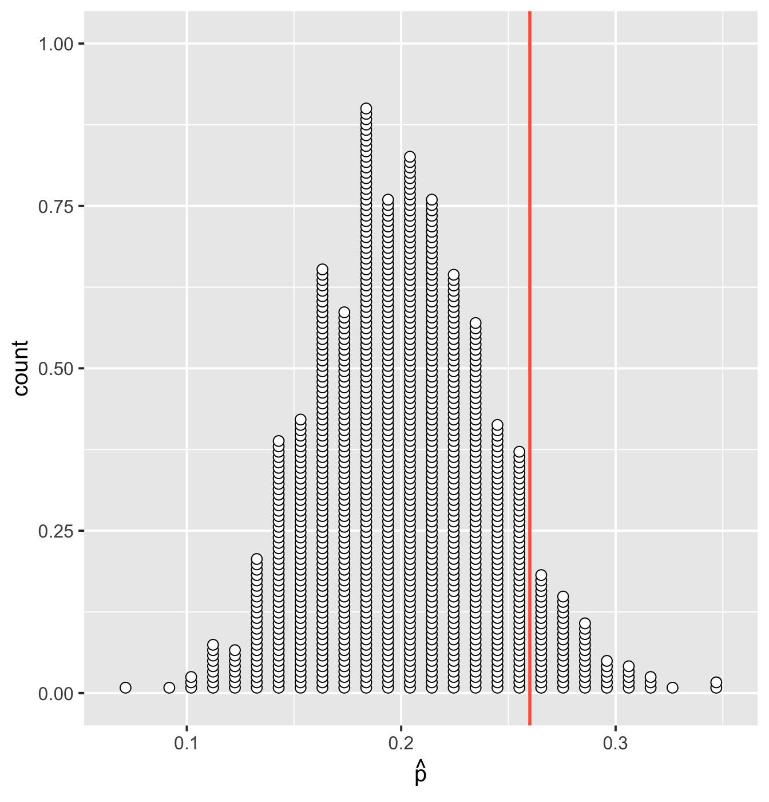
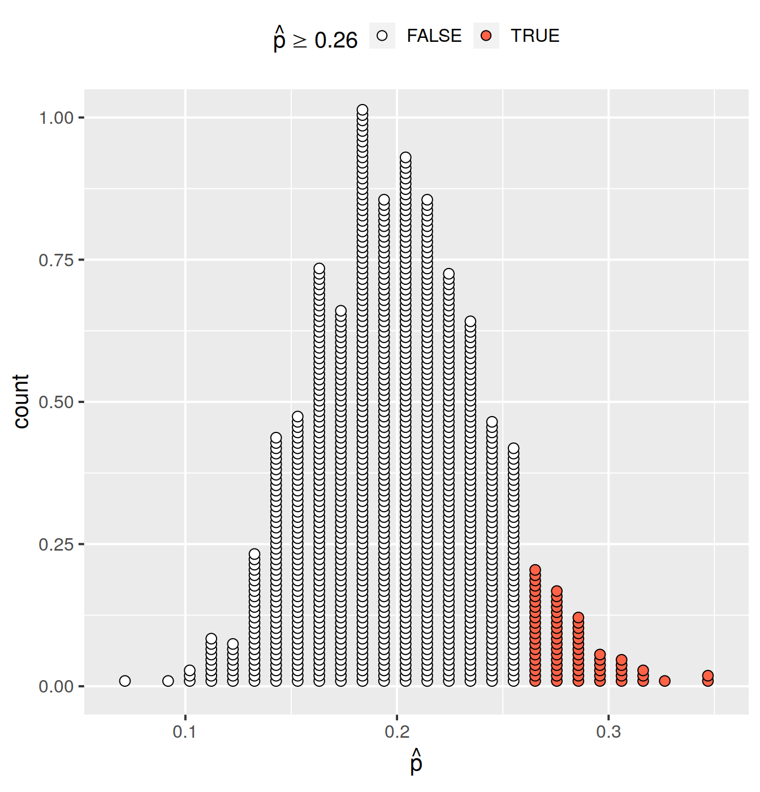
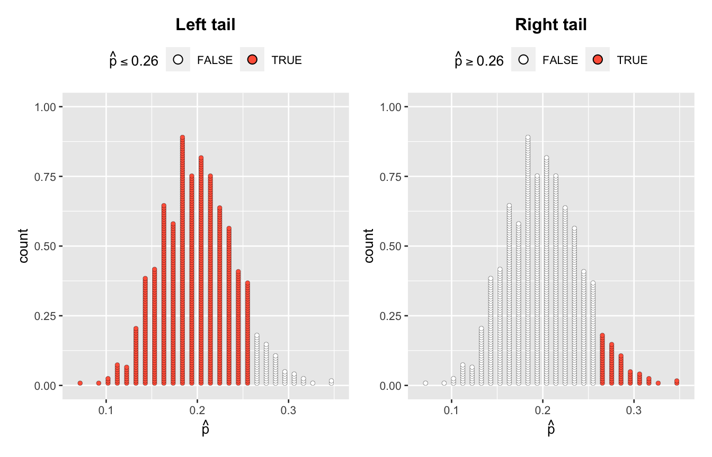
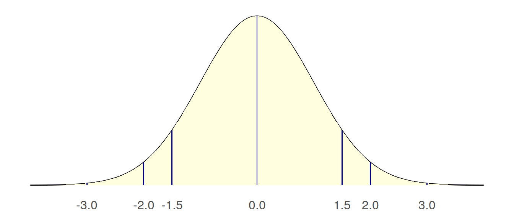

Chapter 13 Testing hypotheses
Instructions
- In this two-hour lab we will go through worked examples in the first hour, and you will attempt to answer some questions in the second hour.
- The Rmarkdown file for this week is here.
Learning outcomes
LO1. Understand null and alternative hypotheses, and how to specify them for a given research question.
LO2. Understand statistical significance and how to calculate p-values from null distributions via simulation.
LO3. Understand how to obtain a null distribution from a bootstrap distribution.
13.1 Recap
In Week 11 we saw that a population is described by parameters, and samples are described by statistics. We typically can not measure the entire population, so a population parameter needs to be estimated by a sample statistic. We quantified the uncertainty in our estimate by the standard error (SE) of the sample statistic. This is defined as the standard deviation of the sampling distribution. The latter shows the values of the sample statistic when computed on many samples of the same size from the same population.
In practice, however, we are not able to quantify the SE by taking repeated samples from the population, as due to money or time constraints we only have one sample of size \(n\). In Week 12 we learned to approximate the sampling distribution by bootstrapping. This approach repeatedly samples with replacement from the observed sample, using the sample sample size. The standard deviation of the bootstrap distribution is an estimate of the SE of the statistic. Using the statistic from the observed sample, and the estimated SE from the bootstrap distribution, we learned how to give a range of plausible values for the population parameter.
This week we will learn how to use the sample data to answer a wide range of questions about a population.
13.2 Walkthrough
Research question of the walkthrough
Is there such a thing as extrasensory perception (ESP), also known as the “sixth sense”?
Extrasensory perception (ESP)
According to Wikipedia, “Extrasensory perception or ESP, also called sixth sense, includes claimed reception of information not gained through the recognized physical senses, but sensed with the mind.”
A famous test for ESP involves a set of cards, shown in Figure 13.1, known as Zener cards:
Figure 13.1: Zener cards (Source: https://en.wikipedia.org/wiki/Extrasensory_perception)
There are five different cards, one for each of the following symbols:
- circle
- cross
- wavy lines
- square
- star
Subjects randomly draw a card from these five, and telepathically communicate the chosen card to another subject who then tries to guess the symbol. No visual or auditory clues are allowed.
Example 1: ESP experimental results
In an experiment conducted on a class of \(n = 98\) students, 25 of them correcly guessed their partner’s card.
This is equivalent to saying that the observed sample proportion of correct guesses is \(\hat{p} = 25/98 = 0.26\).
► Question
Is the sample proportion of correct guesses high enough to provide evidence of ESP?
► Solution
Example 2: In-class activity
- Everyone in the class randomly picks one of the five symbols in Figure 13.1
- Draw the symbol in a bit of paper without showing it to anyone!
- Pair up with someone
- Telepathically communicate your symbol to your partner, who has to guess it without any visual or auditory clues
- Switch roles
- Did your partner guess your card correctly?
Keep track of the sample size \(n\) of the in-class experiment, and the sample statistic \(\hat{p}\). We will use these two values later on to see if we have evidence of ESP in this class.
The random chance model
► Question
If there was no such thing as ESP, what proportion of guesses do you expect to be correct?
► Solution
We use the chance-alone model to help us decide whether:
- the observed proportion could easily happen by sampling variation if we are randomly guessing the symbol, or
- the underlying process is something else, such as having extrasensory perception.
The chance model for the ESP example is specified by the probability of correctly guessing the symbol if we were to guess at random: \(p = 1/5\).
We call this probability the null hypothesis, and it represents what we would expect if there was no ESP (“no effect”).
We denote the null hypothesis by:The alternative explanation
The research question of interest (i.e. if ESP exists) is captured by the alternative hypothesis, which contradicts the null hypothesis. We always put the research claim of interest in the alternative hypothesis, rather than the null one.
The null and the alternative hypotheses are competing claims about the population parameter and we can not have the same value of the parameter included in both the null and the alternative.
In the ESP example, we would have evidence of ESP if the chance of correctly guessing the symbol were greater than when randomly guessing it:
Statistical test
As we saw in Week 11, sample statistics vary from sample to sample.
The probability of 1/5 represents the population proportion. Even if the population proportion was really equal to 1/5, not every random sample would have a sample proportion exactly equal to 1/5.
The key question is then: how do we decide in a principled way if a sample proportion is sufficiently above 1/5 to suggest presence of ESP?
In Example 1 we obtained a sample proportion of 25/98 = 0.26. Is 0.26 sufficiently higher than 0.20 to suggest presence of ESP?
The set of principles that allows us to make an informed claim under uncertainty about the population is called statistical hypothesis testing.
Statistical test
A statistical test is a method that uses the data collected on a sample to assess a claim about the population.
Understanding statistical evidence
► Question
If \(\hat{p}\) denotes the proportion of correctly guessed symbols in an ESP experiment, which of the following sample proportions provide the strongest evidence in favour of ESP?
- \(\hat{p} = 0\)
- \(\hat{p} = 1/5\)
- \(\hat{p} = 1/2\)
- \(\hat{p} = 3/4\)
► Solution
This example shows us that we assess a claim about a population parameter by quantifying the statistical evidence that the observed statistic gives against the null hypothesis and in favour of the alternative hypothesis.
Statistical hypotheses
We perform statistical tests on two competing hypotheses about a population parameter:
- Null hypothesis \(H_0\): typically a claim about “no effect” or “no difference between groups”;
- Alternative hypothesis \(H_1\): the claim we seek evidence for.
The null hypothesis is typically a very specific claim about the population parameter, while the alternative hypothesis is a broader statement.
To visually help you identify the null vs the alternative, typically:
- \(H_0\) includes an = sign
- \(H_1\) includes >, < or \(\neq\)
If \(H_1\) contains either > or <, the alternative hypothesis is said to be one-sided.
If \(H_1\) contains \(\neq\), the alternative hypothesis is said to be two-sided.
Putting this together, in the ESP investigation we have two competing hypotheses:
Statistical significance
Now that we have defined a framework to assess two competing hypotheses about a population parameter, how do we quantify the evidence that the sample data bring in favour of the alternative hypothesis?
We do this by quantifying how unusual it is to obtain a statistic as extreme or more extreme than the observed statistic, if the null hypothesis is true. If it is very unusual, we have significant evidence against the null hypothesis.
Statistical significance
Assuming the null hypothesis to be true, we say that the sample results are statistically significant if it is unlikely that by random chance alone we obtain a statistic that is as extreme as the observed sample statistic, or more extreme (in the direction specified by the alternative hypothesis).
Hypothesis testing basically boils down to quantifying how likely or unlikely it is to observe the sample statistic if the null hypothesis is true. Two decisions are possible:
- If the sample data are statistically significant, we reject \(H_0\) as we have enough evidence against \(H_0\) and in favour of \(H_1\).
- If the sample data are not statistically significant, we do not reject \(H_0\) as we do not have convincing evidence against \(H_0\).
This has an analogy in law. One of the fundamental legal principles is the presumption of innocence, which says that a person is considered innocent until proven guilty, and that the evidence must be beyond reasonable doubt.
The null hypothesis (\(H_0\)), corresponding to no effect, is that the defendant is innocent. The alternative hypothesis (\(H_1\)) is that the defendant is guilty.
The court presumes \(H_0\) to be true (the defendant is innocent) unless the prosecutor can provide strong evidence that the defendant is guilty beyond a reasonable doubt. The burden of proof is on the prosecutor (in our case, the data) to convince the court that the defendant is guilty.
Recall that:
- \(p\) = proportion of correct guesses of the symbol
- \(H_0 : \ p = 1/5\) vs \(H_1 : \ p > 1/5\)
Scenario 1: statistically significant results
If results are statistically significant:
- The sample proportion \(\hat{p}\) of correct guesses is unlikely to occur by random chance alone. Recall that by random chance we mean if ESP does not exist and thus \(p = 1/5\).
- The sample data provide evidence that the population proportion of correct guesses is higher than 1/5, meaning that we have evidence of ESP.
Scenario 2: not statistically significant results
If results are not statistically significant:
- The sample proportion \(\hat{p}\) of correct guesses could easily happen by random chance alone. Recall that by random chance we mean if ESP does not exist and thus \(p = 1/5\).
- The sample data do not provide enough evidence to conclude that \(p > 1/5\) or that ESP exists.
Null distribution
In the previous section, we said that if the observed statistic is very unusual, we have significant evidence against the null hypothesis. But how do we quantify if a value is unusual?
The key idea is to look at the distribution of the statistics we would obtain if \(H_0\) were true. We do this by generating many sample statistics assuming the null hypothesis to be true. The distribution of these statistics is called the null distribution.
Null distribution
The null distribution shows how the statistics vary from sample to sample, assuming the null hypothesis to be true.
Centre: The null distribution is centred at the value of the population parameter specified in the null hypothesis.
For the ESP experiment we can obtain the null distribution with the following steps.
Load the required packages:
Create a tibble with the possible outcome of one play. Either:
- your partner correctly guesses your card (S = success), or
- your partner does not correctly guess your card (F = failure)
Note: Make sure the column name in the tibble is vals and that it is a factor.
## # A tibble: 2 x 1
## vals
## <fct>
## 1 S
## 2 FAssign the probabilities of each possible outcome, remembering that the probabilities must sum to one:
- Probability of success (S) = probability of correctly guessing the symbol: \(p = 1/5\)
- Probability of failure (F) is the complement to one: \(1 - p = 1 - 1/5 = 4/5\).
Generate 1000 samples of size \(n = 98\) from the distribution specified by the null hypothesis (null distribution):
## # A tibble: 98,000 x 2
## # Groups: replicate [1,000]
## replicate vals
## <int> <fct>
## 1 1 F
## 2 1 F
## 3 1 F
## 4 1 S
## 5 1 F
## 6 1 S
## 7 1 S
## 8 1 F
## 9 1 F
## 10 1 F
## # … with 97,990 more rowsNote that the tibble has \(98,000\) rows. Each sample of size \(n = 98\) represents a sequence of 98 plays where each play can either be S (your partner correctly guessed your card) or F (your partner didn’t guess correctly). Hence, each sample is a sequence of S’s and F’s. Because we have 1000 of such samples, the total number of rows will be \(98 \times 1000 = 98,000\).
We can now compute the proportion of successes in each sample:
sample_props <- samples %>%
group_by(replicate) %>%
summarise(prop = sum(vals == 'S') / n())
sample_props## # A tibble: 1,000 x 2
## replicate prop
## <int> <dbl>
## 1 1 0.163
## 2 2 0.184
## 3 3 0.143
## 4 4 0.235
## 5 5 0.224
## 6 6 0.214
## 7 7 0.204
## 8 8 0.184
## 9 9 0.224
## 10 10 0.224
## # … with 990 more rowsLet us now plot the 1000 sample proportions obtained assuming the null hypothesis to be true. This plot shows the null distribution, and each dot represents one of the 1000 proportions from the above tibble:
ggplot(sample_props, aes(x = prop)) +
geom_dotplot(binwidth = 0.01, dotsize = 0.5, fill = 'white', stackratio = 0.5) +
labs(x = expression(hat(p)))
Where does the sample statistic from Example 1 lie in the null distribution? Let’s add a vertical line showing the value of the observed statistic, \(\hat{p} = 0.26\):
ggplot(sample_props, aes(x = prop)) +
geom_dotplot(binwidth = 0.01, dotsize = 0.5, fill = 'white', stackratio = 0.5) +
geom_vline(xintercept = 0.26, color = 'red', size = 1) +
labs(x = expression(hat(p)))
Do we have a high chance of observing the statistic \(\hat{p} = 0.26\) under the null hypothesis of random guessing?
Different researchers might reach different conclusions by looking at this plot. Rather than taking a decision by visually inspecting the plot, we want to find a generically applicable tool that would make different researchers all reach to the same conclusion.
P-value
Recall now the definition of statistical significance. We have evidence against the null hypothesis if it would be unusual to obtain statistics as extreme or more extreme than the observed statistic in the null distribution.
To summarise: in order to measure how unusual the observed statistic is under the null hypothesis, we need to generate many statistics under the null hypothesis (null distribution) and see what’s the proportion of the generated statistics that are as extreme as, or more extreme than, the observed statistic.
The proportion of statistics from the null distribution as extreme or more extreme than the observed statistic is known as the p-value. The smaller the p-value, the higher the statistical evidence against the null hypothesis.
P-value
The p-value represents the chance of observing a statistic as extreme or more extreme than the observed one, if the null hypothesis were true.
In Example 1 on ESP, we can identify the statistics in the null distribution that are as extreme or more extreme than the observed one (\(\hat{p} = 0.26\)) by color-coding them:
ggplot(sample_props, aes(x = prop, fill = (prop >= 0.26))) +
geom_dotplot(binwidth = 0.01, dotsize = 0.5, stackratio = 0.5) +
labs(x = expression(hat(p)), fill = expression(hat(p) >= 0.26)) +
theme(legend.position="top")
We now calculate the proportion of statistics in the null distribution which are greater than or equal 0.26. You can either do that by eye, counting the green dots and dividing them by the total number of dots (1000) or, more quickly:
## # A tibble: 1 x 1
## pvalue
## <dbl>
## 1 0.07Interpretation of the p-value: If we were to randomly guess the card symbol in Example 1, the chance of getting a proportion as high as 0.26 is 0.07.
The p-value needs to be calculated in the direction specified by the alternative hypothesis:
- The p-value of a one-sided hypothesis is the proportion in tail specified by \(H_1\).
- The p-value of a two-sided hypothesis is twice the proportion in the smallest tail, i.e. the tail with the smallest count.
In the example below, the smallest tail (the tail with the lowest count) is the right tail. So if we were to perform a two-sided test for the hypothesis \(p \neq 1/5\), we would compute it as twice the proportion of statistics greater than or equal to the observed statistic: 
You can calculate a p-value via randomization for any statistic:
- Simulate many samples assuming \(H_0\) true
- Compute the statitic on each of the simulated samples
- Compute the proportion of simulated statistics as extreme or more extreme than the observed statistic, in the direction specified by the alternative hypothesis.
Making a formal decision
The smaller the p-value, the greater the evidence that the data provide against the null hypothesis \(H_0\).
► Question
Which of the following p-values gives the strongest evidence against \(H_0\)?
- 0.005
- 0.1
- 0.35
- 0.92
► Solution
To summarise, the outcome of a statistical test is either:
- the p-value is small
- we reject the null hypothesis
- the observed sample statistic would be extreme in the null distribution
- the results are statistically significant
- the test concludes that we have enough evidence in favour of \(H_1\)
- the p-value is not small
- we do not reject the null hypothesis
- the observed sample statistic would not be extreme in the null distribution
- the results are not statistically significant
- we do not have sufficient evidence to reject \(H_0\).
How small should the p-value be?
This is set by the researcher before seeing any data. We decide if a p-value is small or not by specifying a threshold below which a p-value is deemed to be small.
Significance level
The significance level \(\alpha\) is the threshold below which we deem a p-value small enough to reject the null hypothesis.
For a given significance level \(\alpha\), specified before collecting any data:
- if the p-value \(< \alpha\) we reject \(H_0\)
- if the p-value \(\geq \alpha\) we do not reject \(H_0\)
Typically, a “default” choice for \(\alpha\) is \(0.05\).
Caution: Never accept \(H_0\). “Do not reject \(H_0\)” is not the same as “accept \(H_0\)”. Not having sufficient evidence against \(H_0\) does not mean having evidence for \(H_0\).
The following table summarizes in words the strength of evidence that the sample results bring in favour of the alternative hypothesis for different p-values:
| p-value | strength of evidence |
|---|---|
| 0.1 \(<\) p-value | not much evidence against null hypothesis |
| 0.05 \(<\) p-value \(\leq\) 0.1 | moderate evidence against the null hypothesis |
| 0.01 \(<\) p-value \(\leq\) 0.05 | strong evidence against the null hypothesis |
| p-value \(\leq\) 0.01 | very strong evidence against the null hypothesis Here is |
We can now wrap up Example 1 on ESP, and conclude that at a significance level of 0.05, we do not reject the null hypothesis as the p-value 0.07 is greater than \(\alpha = 0.05\). Hence, the sample data do not show significant evidence for ESP.
An alternative to the p-value as a measure of the strength of evidence is given by the standardized statistic. This measures how many standard deviations away from the mean of the null distribution the observed statistic is. A standardized statistic is typically denoted by \(z\), and can be calculated as:
\[ \textrm{standardized statistic} = z = \frac{\textrm{sample statistic} - \textrm{mean of null distribution}}{\textrm{standard deviation of null distribution}} \]
To compute this for Example 1 on ESP, we first need to find the standard deviation of the null distribution:
## # A tibble: 1 x 1
## sd
## <dbl>
## 1 0.0404We interpret a standardized statistic according to the following table:
| standardized statistic | strength of evidence |
|---|---|
| Between −1.5 and 1.5 | little or no evidence against the null hypothesis |
| Below −1.5 or above 1.5 | moderate evidence against the null hypothesis |
| Below −2 or above 2 | strong evidence against the null hypothesis |
| Below −3 or above 3 | very strong evidence against the null hypothesis |
This idealized version of a histogram shows how far from the mean of the null distribution each standardized statistic value is: 
If we interpreted the standardized statistic, rather than the p-value, for Example 1 on ESP, we would have reached to the sample conclusion. As the observed statistic (0.26) is only 1.5 standard deviations above the mean of the null distribution (0.20), the sample data bring little or no evidence against the null hypothesis, thus we do not reject \(H_0\).
Note: The p-value is a probability, so it’s always between 0 and 1. A standardized statistic instead can be positive or negative.
13.3 Lab
Research question of the lab
Has the average body temperature changed from the long-thought 37 °C?
In today’s lab we will investigate the average body temperature for healthy humans. You might probably be thinking that the average is about 37 °C, and this is what most people would answer as this has been considered as granted for many years.
However, could it be possible that the average body temperature for healthy humans has changed over time? Perhaps this could be due to the climate change?
We will use data5 comprising measurements on body temperature and pulse rate for a sample of \(n = 50\) healthy subjects.
Using the concepts learned today, the question boils down to: do the sample data provide significant evidence (at a 5% level) that the average body temperature is really different from the long-thought 37 °C?
Required packages
Before attempting to answer the following questions, make sure to run the following code chunk, which assumes that you have already installed the packages tidyverse and moderndive.
If you have not installed them yet, type install.packages("tidyverse") and install.packages("moderndive") in the R console.
Load the tidyverse and moderndive packages:
Importing the data
Let’s start by loading the data using the function read_tsv to read tab separated values:
## # A tibble: 50 x 2
## BodyTemp Pulse
## <dbl> <dbl>
## 1 36.4 69
## 2 37.4 77
## 3 37.2 75
## 4 37.1 84
## 5 36.7 71
## 6 37.2 76
## 7 37.2 81
## 8 36.6 77
## 9 36 75
## 10 37.2 81
## # … with 40 more rowsData inspection
► Question 1
- What are the names of the variables in the dataset?
- What are the dimensions of the tibble?
- Are there any missing values? Hint: Use the function
anyNA()to check if there are any Not Available (NA) entries.
► Solution
Sample average and standard deviation
► Question 2
What is the average temperature in the sample and the standard deviation?
► Solution
Null and alternative hypothesis
► Question 3
State the null and alternative hypothesis for the research question of this lab.
► Solution
Bootstrap distribution and Null distribution
In order to calculate a p-value we need to obtain the sampling distribution of the mean assuming that the null hypothesis is true (null distribution). However, we only have one sample, so we must approximate it with a boostrap distribution showing how the sample mean varies from bootstrap sample to bootstrap sample.
The required steps are:
- obtain a bootstrap distribution (this is centred at the sample mean \(\bar{x} =\) 36.81)
- shift it to be centred at the parameter value specified in the null hypothesis (\(\mu =\) 37)
► Question 4
Compute the bootstrap distribution of the mean using 10,000 repeated samples.
Plot the bootstrap distribution using a histogram.
► Solution

► Question 5
Compute the null distribution, which needs to be centred at the value of the parameter specified by the null hypothesis.
Plot the null distribution using a histogram.
Hint: Since you already have the bootstrap distribution, which is centred at the sample mean, you can shift the original sample by adding to each body temperature the difference between the parameter value in the null hypothesis and the sample mean.
► Solution
Visualise the observed statistic on the null distribution
► Question 6
Show a histogram of the null distribution, superimposing a vertical red line displaying the observed statistic.
► Solution
P-value
► Question 7
Calculate the proportion of means as extreme as the observed statistic in the null distribution.
Hint: As this is a double-sided alternative hypothesis, remember to use 2 * p-value of the smallest tail.
► Solution

Interpreting the p-value
► Question 8
Using the p-value found in the previous question, how would you answer the research question of the lab?
► Solution
13.4 Glossary
- Alternative hypothesis. A claim about the population parameter for which we seek evidence for. It contradicts the null hypothesis.
- Hypothesis test. A set of principles for measuring the strength of evidence against a null hypothesis about the parameter of interest.
- Null hypothesis. A claim about the population parameter typically involving “no effect” or “no difference between groups”.
- P-value. The probability of obtaining a value of the statistic at least as extreme as the observed statistic when the null hypothesis is true.
- Significance level. A threshold used as a criterion for deciding when a p-value is small enough to provide convincing evidence against the null hypothesis. It is typically denoted by \(\alpha\) and common values are 0.001, 0.01, 0.05, or 0.1.
- Statistically significant. Unlikely to occur just by random chance.
13.5 References
- Lock, R. H., Lock, P. F., Morgan, K. L., Lock, E. F., & Lock, D. F. (2013). Statistics: Unlocking the power of data. John Wiley & Sons.
- Tintle, N., Chance, B. L., Cobb, G. W., Rossman, A. J., Roy, S., Swanson, T., & VanderStoep, J. (2015). Introduction to statistical investigations. New York: Wiley.
Shoemaker, A. L. (1996). What’s Normal: Temperature, Gender and Heartrate. Journal of Statistics Education, 4(2), 4.↩